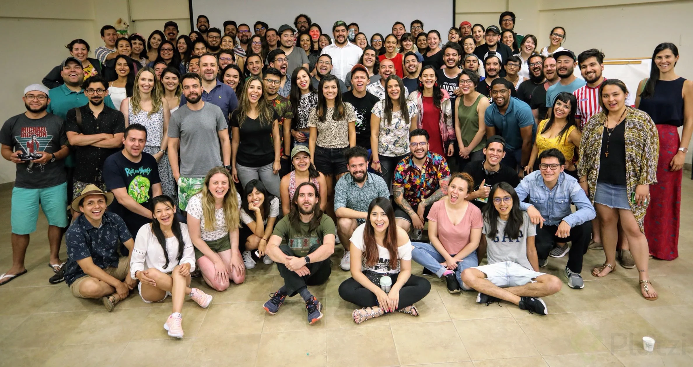

Y este es el parrafo de inicio donde vamos a explicar las cosas increeibles que se puedes hacer con ramas

Los blogs son la mejor forma de compartir informacion y tus ideas. Mucho mas que ir a conferencias o salir en youtube. Exepto si eres un rokstar. Pero estadisticamnte no lo eres ..... por ahora.
Suscribete y dale like